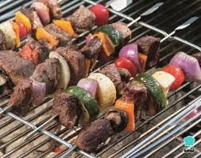

Contenido del Tutorial
- Ingredientes necesarios
- Preparación de los ingredientes
- Armado de las brochetas gourmet
- Técnicas de cocción
- Presentación final
Ingredientes necesarios

Para preparar brochetas gourmet necesitas ingredientes frescos y de alta calidad. Algunas opciones incluyen pollo, carne, camarones, vegetales como pimientos y cebollas, frutas como piña o mango, aceite de oliva y especias.
Preparación de los ingredientes
.jpg)
Antes de armar las brochetas, corta todos los ingredientes en trozos similares para asegurar una cocción uniforme. Marina las carnes con especias y aceite de oliva para potenciar el sabor.
Armado de las brochetas gourmet
.jpg)
Intercala colores y texturas para lograr un aspecto visual atractivo. Usa palillos de madera o metal resistentes y mantén un orden para que cada brocheta sea consistente.
Técnicas de cocción

Puedes cocinar las brochetas a la parrilla, al horno o en sartén. La clave está en controlar el tiempo para evitar que las carnes se sequen. Gira constantemente para una cocción pareja.
Presentación final
.jpg)
Sirve las brochetas en una tabla de madera o plato elegante. Puedes acompañarlas con una salsa fresca como chimichurri, salsa de yogurt o una reducción balsámica.